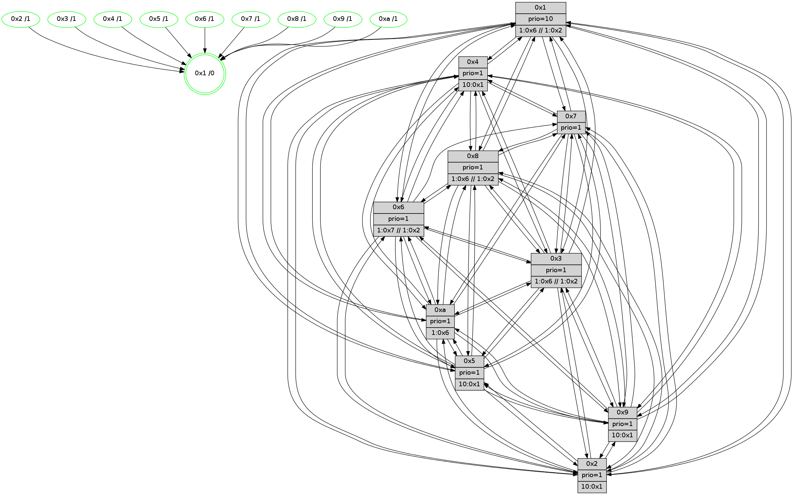

>> << IDX [start] -100 -25 -5 +0 +5 +25 +100 [565.51850605]
 Previous packets
----------------------------------------------------------------------
560.001582 beacon01(faad) #0 coord=01,02,03,04,05,06,07,0a,09,08 cycle=688.0ms assoc
-- color-indic=1 64 3b ac
560.011565 beacon02(faad) #0 coord=01,02,03,04,05,06,07,0a,09,08 cycle=688.0ms assoc 64 a8 9d
560.021565 beacon03(faad) #0 coord=01,02,03,04,05,06,07,0a,09,08 cycle=688.0ms assoc 64 d2 d0
560.031565 beacon04(faad) #0 coord=01,02,03,04,05,06,07,0a,09,08 cycle=688.0ms assoc 64 a5 3a
560.041564 beacon05(faad) #0 coord=01,02,03,04,05,06,07,0a,09,08 cycle=688.0ms assoc 64 df 77
560.051565 beacon06(faad) #0 coord=01,02,03,04,05,06,07,0a,09,08 cycle=688.0ms assoc 64 51 a0
560.061565 beacon07(faad) #0 coord=01,02,03,04,05,06,07,0a,09,08 cycle=688.0ms assoc 64 2b ed
560.071571 beacon0a(faad) #0 coord=01,02,03,04,05,06,07,0a,09,08 cycle=688.0ms assoc 64 5a e6
560.081569 beacon09(faad) #0 coord=01,02,03,04,05,06,07,0a,09,08 cycle=688.0ms assoc 64 d4 31
560.091570 beacon08(faad) #0 coord=01,02,03,04,05,06,07,0a,09,08 cycle=688.0ms assoc 64 ae 7c
560.102815 [Hello(1): seq=269 sym=4,2,9,5,10,3,8,6,7 sysInfo=coloring-mode-on,ColoringModeRequestCalled stat=4:5,11,13,6/2:4,11,13,6/9:14,1,0,6/5:13,1,12,7/10:7,9,13,4/3:4,14,15,7/8:3,12,2,4/6:8,1,15,3/7:2,9,0,6]
560.105855 [Color(2) seq=18 @0:0 prio=1]
560.107174 [Color(9) seq=24 @0:0 prio=1]
560.108733 [Color(3) seq=40 @0:0 prio=1 >1.@6,1.@7,1.@8,1.@9 >>1.@2,1.@3,1.@5]
560.111216 [Color(8) seq=40 @0:0 prio=1 >1.@6,1.@7,1.@9,1.@a >>1.@2,1.@3,1.@5]
560.114167 [Hello(6): seq=360 sym=2,3,5,4,7,9,8,10,1 sysInfo=coloring-mode-on,ColoringModeIndicationCalled stat=2:7,7,14,4/3:7,13,10,4/5:10,9,11,7/4:8,6,11,5/7:8,1,10,2/9:7,10,13,6/8:6,11,11,3/10:8,9,13,4/1:7,4,15,0]
560.117308 [Color(6) seq=40 @0:0 prio=1 >1.@7,1.@8,1.@9,1.@a >>1.@2,1.@3,1.@5]
560.119251 [Color(4) seq=15 @0:0 prio=1]
560.120800 [Color(5) seq=24 @0:0 prio=1]
560.122257 [Hello(7): seq=360 sym=2,3,5,6,4,8,9,10,1 sysInfo= stat=2:11,3,14,7/3:2,12,11,6/5:4,6,12,8/6:7,1,5,2/4:13,3,13,5/8:3,1,13,2/9:1,6,13,7/10:5,7,12,4/1:6,1,0,0]
560.125410 [Color(7) seq=28 @0:0 prio=1]
560.134204 [Color(10) seq=29 @0:0 prio=1]
----------------------------------------------------------------------
560.789713 beacon01(faad) #0 coord=01,02,03,04,05,06,07,0a,09,08 cycle=688.0ms assoc
-- color-indic=1 64 87 a9
560.799696 beacon02(faad) #0 coord=01,02,03,04,05,06,07,0a,09,08 cycle=688.0ms assoc 64 14 98
560.809695 beacon03(faad) #0 coord=01,02,03,04,05,06,07,0a,09,08 cycle=688.0ms assoc 64 6e d5
560.819696 beacon04(faad) #0 coord=01,02,03,04,05,06,07,0a,09,08 cycle=688.0ms assoc 64 19 3f
560.829696 beacon05(faad) #0 coord=01,02,03,04,05,06,07,0a,09,08 cycle=688.0ms assoc 64 63 72
560.839697 beacon06(faad) #0 coord=01,02,03,04,05,06,07,0a,09,08 cycle=688.0ms assoc 64 ed a5
560.849697 beacon07(faad) #0 coord=01,02,03,04,05,06,07,0a,09,08 cycle=688.0ms assoc 64 97 e8
560.859701 beacon0a(faad) #0 coord=01,02,03,04,05,06,07,0a,09,08 cycle=688.0ms assoc 64 e6 e3
560.869701 beacon09(faad) #0 coord=01,02,03,04,05,06,07,0a,09,08 cycle=688.0ms assoc 64 68 34
560.879703 beacon08(faad) #0 coord=01,02,03,04,05,06,07,0a,09,08 cycle=688.0ms assoc 64 12 79
560.893925 [Hello(5): seq=361 sym=7,6,4,3,1,9,8,10,2 sysInfo= stat=7:4,8,12,3/6:5,0,12,3/4:9,9,8,3/3:7,2,1,1/1:0,5,0,0/9:6,11,9,3/8:8,1,5,2/10:5,2,8,3/2:6,9,9,3]
560.897906 [Hello(10): seq=293 sym=6,2,3,8,9,5,7,4,1 sysInfo= stat=6:5,12,11,3/2:3,1,1,0/3:4,2,2,0/8:7,7,11,3/9:2,10,9,3/5:12,9,8,5/7:3,7,9,2/4:8,9,8,6/1:7,5,1,0]
560.901439 [Hello(9): seq=304 sym=5,2,3,4,7,6,8,10,1 sysInfo=hasWarning stat=5:13,10,7,6/2:6,10,11,4/3:14,11,4,3/4:1,8,8,4/7:7,6,10,2/6:13,12,9,3/8:14,9,7,1/10:11,14,7,4/1:9,5,2,0]
560.905279 [Hello(3): seq=361 sym=1,7,6,2,4,8,9,10,5 sysInfo=coloring-mode-on,ColoringModeIndicationCalled stat=1:13,8,1,0/7:4,7,8,3/6:11,11,8,4/2:10,8,10,6/4:15,9,11,4/8:10,11,6,0/9:1,11,14,5/10:13,10,5,2/5:1,9,10,5]
560.908143 [Hello(2): seq=358 sym=4,5,7,6,3,9,8,10,1 asym= sysInfo=hasWarning stat=4:13,8,9,2/5:0,12,8,4/7:3,11,10,3/6:7,1,12,3/3:10,9,2,1/9:2,11,7,1/8:10,2,5,1/10:1,1,5,2/1:13,6,1,0]
560.913365 [STC(1) #0.27 tree-change,inconsistent-stability,stable,to-color d=0]
560.915640 [Color(1) seq=41 @0:0 prio=10 >1.@6,1.@7,1.@8,1.@9 >>1.@6,1.@7,1.@8]
----------------------------------------------------------------------
561.577846 beacon01(faad) #0 coord=01,02,03,04,05,06,07,0a,09,08 cycle=688.0ms assoc
-- color-indic=1 64 43 a7
561.587828 beacon02(faad) #0 coord=01,02,03,04,05,06,07,0a,09,08 cycle=688.0ms assoc 64 d0 96
561.597829 beacon03(faad) #0 coord=01,02,03,04,05,06,07,0a,09,08 cycle=688.0ms assoc 64 aa db
561.607830 beacon04(faad) #0 coord=01,02,03,04,05,06,07,0a,09,08 cycle=688.0ms assoc 64 dd 31
561.617830 beacon05(faad) #0 coord=01,02,03,04,05,06,07,0a,09,08 cycle=688.0ms assoc 64 a7 7c
561.627831 beacon06(faad) #0 coord=01,02,03,04,05,06,07,0a,09,08 cycle=688.0ms assoc 64 29 ab
561.637830 beacon07(faad) #0 coord=01,02,03,04,05,06,07,0a,09,08 cycle=688.0ms assoc 64 53 e6
561.647835 beacon0a(faad) #0 coord=01,02,03,04,05,06,07,0a,09,08 cycle=688.0ms assoc 64 22 ed
561.657835 beacon09(faad) #0 coord=01,02,03,04,05,06,07,0a,09,08 cycle=688.0ms assoc 64 ac 3a
561.667836 beacon08(faad) #0 coord=01,02,03,04,05,06,07,0a,09,08 cycle=688.0ms assoc 64 d6 77
561.680362 [Hello(1): seq=270 sym=4,2,9,5,10,3,8,6,7 sysInfo=coloring-mode-on,ColoringModeRequestCalled stat=4:5,12,13,6/2:4,12,13,6/9:14,2,0,6/5:14,2,12,7/10:7,10,13,4/3:4,15,15,7/8:4,13,2,4/6:9,2,15,3/7:3,10,0,6]
561.683097 [Hello(7): seq=361 sym=2,3,5,6,4,8,9,10,1 sysInfo= stat=2:12,3,14,7/3:3,12,11,6/5:5,6,12,8/6:7,1,5,2/4:13,3,13,5/8:4,1,13,2/9:2,6,13,7/10:6,8,12,4/1:7,2,1,0]
561.686731 [STC(8)->1 #0.27 tree-change,inconsistent-stability,stable,to-color d=1]
561.688013 [STC(9)->1 #0.27 tree-change,inconsistent-stability,stable,to-color d=1]
561.689290 [Hello(6): seq=361 sym=2,3,5,4,7,9,8,10,1 sysInfo=coloring-mode-on,ColoringModeIndicationCalled stat=2:8,8,14,4/3:8,13,10,4/5:11,10,11,7/4:8,7,11,5/7:9,2,10,2/9:8,10,13,6/8:7,11,11,3/10:9,10,13,4/1:8,5,0,0]
561.692129 [STC(6)->1 #0.27 tree-change,inconsistent-stability,stable,to-color d=1]
561.693929 [Color(9) seq=25 @0:0 prio=1 >10.@1,1.@4,1.@6,1.@7]
561.695821 [Color(8) seq=41 @0:0 prio=1 >1.@6,1.@7,1.@9,1.@a >>1.@6,1.@7,1.@8]
561.698388 [Color(6) seq=41 @0:0 prio=1 >1.@7,1.@8,1.@9,1.@a >>1.@6,1.@7,1.@8]
561.700616 [STC(3)->1 #0.27 tree-change,inconsistent-stability,stable,to-color d=1]
561.702258 [STC(4)->1 #0.27 tree-change,inconsistent-stability,stable,to-color d=1]
561.704187 [Color(3) seq=41 @0:0 prio=1 >1.@6,1.@7,1.@8,1.@9 >>1.@6,1.@7,1.@8]
561.707002 [STC(10)->1 #0.27 tree-change,inconsistent-stability,stable,to-color d=1]
561.709932 [STC(5)->1 #0.27 tree-change,inconsistent-stability,stable,to-color d=1]
561.712593 [Color(10) seq=30 @0:0 prio=1]
561.714209 [STC(2)->1 #0.27 tree-change,inconsistent-stability,stable,to-color d=1]
561.715548 [Color(5) seq=25 @0:0 prio=1]
561.719492 [Color(2) seq=19 @0:0 prio=1 >10.@1,1.@4,1.@6,1.@7]
561.721208 [STC(7)->1 #0.27 tree-change,inconsistent-stability,stable,to-color d=1]
561.722975 [Color(4) seq=16 @0:0 prio=1 >10.@1,1.@2,1.@3,1.@5]
561.728104 [Color(7) seq=29 @0:0 prio=1]
----------------------------------------------------------------------
562.365979 beacon01(faad) #0 coord=01,02,03,04,05,06,07,0a,09,08 cycle=688.0ms assoc
-- color-indic=1 64 ff a2
562.375961 beacon02(faad) #0 coord=01,02,03,04,05,06,07,0a,09,08 cycle=688.0ms assoc 64 6c 93
562.385961 beacon03(faad) #0 coord=01,02,03,04,05,06,07,0a,09,08 cycle=688.0ms assoc 64 16 de
562.395962 beacon04(faad) #0 coord=01,02,03,04,05,06,07,0a,09,08 cycle=688.0ms assoc 64 61 34
562.405963 beacon05(faad) #0 coord=01,02,03,04,05,06,07,0a,09,08 cycle=688.0ms assoc 64 1b 79
562.415962 beacon06(faad) #0 coord=01,02,03,04,05,06,07,0a,09,08 cycle=688.0ms assoc 64 95 ae
562.425963 beacon07(faad) #0 coord=01,02,03,04,05,06,07,0a,09,08 cycle=688.0ms assoc 64 ef e3
562.435967 beacon0a(faad) #0 coord=01,02,03,04,05,06,07,0a,09,08 cycle=688.0ms assoc 64 9e e8
562.445968 beacon09(faad) #0 coord=01,02,03,04,05,06,07,0a,09,08 cycle=688.0ms assoc 64 10 3f
562.455967 beacon08(faad) #0 coord=01,02,03,04,05,06,07,0a,09,08 cycle=688.0ms assoc 64 6a 72
562.467815 [Hello(3): seq=362 sym=1,7,6,2,4,8,9,10,5 sysInfo=coloring-mode-on,ColoringModeIndicationCalled stat=1:14,9,2,0/7:4,8,9,3/6:11,11,8,4/2:11,9,11,6/4:15,10,11,4/8:10,11,6,0/9:1,11,14,5/10:13,11,6,2/5:1,10,11,5]
562.471162 [Hello(5): seq=362 sym=7,6,4,3,1,9,8,10,2 sysInfo= stat=7:4,9,13,3/6:5,0,12,3/4:9,10,8,3/3:8,2,1,1/1:1,6,1,0/9:7,11,9,3/8:8,1,5,2/10:6,2,8,3/2:7,10,9,3]
562.474052 [Hello(8): seq=305 sym=5,2,3,4,7,6,9,10,1 sysInfo=coloring-mode-on,ColoringModeIndicationCalled stat=5:0,10,10,5/2:1,3,1,0/3:7,5,7,6/4:12,10,12,5/7:0,4,12,4/6:6,0,11,4/9:14,10,11,4/10:12,13,7,4/1:9,9,4,0]
562.478004 [Hello(4): seq=362 sym=5,7,6,2,3,9,8,10,1 sysInfo= stat=5:3,15,9,6/7:6,11,10,2/6:12,2,11,4/2:13,11,9,5/3:5,12,0,1/9:1,14,7,3/8:11,11,12,4/10:0,3,9,3/1:15,6,5,0]
562.481021 [Hello(10): seq=294 sym=6,2,3,8,9,5,7,4,1 sysInfo= stat=6:5,12,11,3/2:4,2,2,0/3:5,2,2,0/8:7,7,11,3/9:3,10,9,3/5:12,10,8,5/7:3,8,10,2/4:8,10,8,6/1:8,6,2,0]
562.483600 [Hello(9): seq=305 sym=5,2,3,4,7,6,8,10,1 sysInfo=hasWarning stat=5:13,11,8,6/2:7,11,12,4/3:15,12,5,3/4:1,9,9,4/7:7,7,11,2/6:14,13,9,3/8:14,10,7,1/10:11,15,8,4/1:10,6,3,0]
562.488988 [Color(1) seq=42 @0:0 prio=10 >1.@6,1.@7,1.@8,1.@9 >>1.@2,1.@3,1.@4]
562.494275 [Hello(2): seq=359 sym=4,5,7,6,3,9,8,10,1 sysInfo=hasWarning stat=4:13,9,9,2/5:0,12,8,4/7:3,12,11,3/6:7,1,12,3/3:10,9,2,1/9:2,11,7,1/8:10,2,5,1/10:1,1,5,2/1:14,7,2,0]
----------------------------------------------------------------------
563.154111 beacon01(faad) #0 coord=01,02,03,04,05,06,07,0a,09,08 cycle=688.0ms assoc
-- color-indic=1 64 cb ba
563.164093 beacon02(faad) #0 coord=01,02,03,04,05,06,07,0a,09,08 cycle=688.0ms assoc 64 58 8b
563.174093 beacon03(faad) #0 coord=01,02,03,04,05,06,07,0a,09,08 cycle=688.0ms assoc 64 22 c6
563.184094 beacon04(faad) #0 coord=01,02,03,04,05,06,07,0a,09,08 cycle=688.0ms assoc 64 55 2c
563.194094 beacon05(faad) #0 coord=01,02,03,04,05,06,07,0a,09,08 cycle=688.0ms assoc 64 2f 61
563.204093 beacon06(faad) #0 coord=01,02,03,04,05,06,07,0a,09,08 cycle=688.0ms assoc 64 a1 b6
563.214095 beacon07(faad) #0 coord=01,02,03,04,05,06,07,0a,09,08 cycle=688.0ms assoc 64 db fb
563.224097 beacon0a(faad) #0 coord=01,02,03,04,05,06,07,0a,09,08 cycle=688.0ms assoc 64 aa f0
563.234098 beacon09(faad) #0 coord=01,02,03,04,05,06,07,0a,09,08 cycle=688.0ms assoc 64 24 27
563.244100 beacon08(faad) #0 coord=01,02,03,04,05,06,07,0a,09,08 cycle=688.0ms assoc 64 5e 6a
563.255342 [Hello(1): seq=271 sym=4,2,9,5,10,3,8,6,7 sysInfo=coloring-mode-on,ColoringModeRequestCalled stat=4:5,13,14,6/2:5,13,14,6/9:14,3,1,6/5:14,3,13,7/10:7,11,14,4/3:5,0,0,7/8:4,14,3,4/6:10,3,0,3/7:4,11,1,6]
563.258452 [Color(9) seq=26 @0:0 prio=1 >10.@1,1.@4,1.@6,1.@7]
563.260118 [Color(10) seq=31 @0:0 prio=1 >1.@6,1.@7,1.@8,1.@9]
563.262366 [Color(2) seq=20 @0:0 prio=1 >10.@1,1.@4,1.@6,1.@7]
563.264070 [Color(5) seq=26 @0:0 prio=1 >10.@1,1.@4,1.@6,1.@7]
563.266931 [Color(8) seq=42 @0:0 prio=1 >1.@6,1.@7,1.@9,1.@a >>1.@2,1.@3,1.@4]
563.269220 [Hello(6): seq=362 sym=2,3,5,4,7,9,8,10,1 sysInfo=coloring-mode-on,ColoringModeIndicationCalled stat=2:9,9,15,4/3:9,14,11,4/5:12,11,12,7/4:9,8,12,5/7:9,3,11,2/9:9,10,13,6/8:8,11,11,3/10:10,11,14,4/1:9,6,0,0]
563.272661 [Color(6) seq=42 @0:0 prio=1 >1.@7,1.@8,1.@9,1.@a >>1.@2,1.@3,1.@4]
563.274777 [Color(4) seq=17 @0:0 prio=1 >10.@1,1.@2,1.@3,1.@5]
563.281787 [Color(7) seq=30 @0:0 prio=1]
----------------------------------------------------------------------
563.942242 beacon01(faad) #0 coord=01,02,03,04,05,06,07,0a,09,08 cycle=688.0ms assoc
-- color-indic=1 64 77 bf
563.952224 beacon02(faad) #0 coord=01,02,03,04,05,06,07,0a,09,08 cycle=688.0ms assoc 64 e4 8e
563.962225 beacon03(faad) #0 coord=01,02,03,04,05,06,07,0a,09,08 cycle=688.0ms assoc 64 9e c3
563.972224 beacon04(faad) #0 coord=01,02,03,04,05,06,07,0a,09,08 cycle=688.0ms assoc 64 e9 29
563.982227 beacon05(faad) #0 coord=01,02,03,04,05,06,07,0a,09,08 cycle=688.0ms assoc 64 93 64
563.992224 beacon06(faad) #0 coord=01,02,03,04,05,06,07,0a,09,08 cycle=688.0ms assoc 64 1d b3
564.002225 beacon07(faad) #0 coord=01,02,03,04,05,06,07,0a,09,08 cycle=688.0ms assoc 64 67 fe
564.012230 beacon0a(faad) #0 coord=01,02,03,04,05,06,07,0a,09,08 cycle=688.0ms assoc 64 16 f5
564.022229 beacon09(faad) #0 coord=01,02,03,04,05,06,07,0a,09,08 cycle=688.0ms assoc 64 98 22
564.032231 beacon08(faad) #0 coord=01,02,03,04,05,06,07,0a,09,08 cycle=688.0ms assoc 64 e2 6f
564.043447 [Hello(4): seq=363 sym=5,7,6,2,3,9,8,10,1 sysInfo= stat=5:3,15,9,6/7:7,12,10,2/6:12,2,11,4/2:14,11,9,5/3:5,12,0,1/9:2,14,7,3/8:11,11,12,4/10:1,3,9,3/1:0,7,5,0]
564.046374 [Color(1) seq=43 @0:0 prio=10 >1.@6,1.@7,1.@8,1.@9 >>1.@2,1.@3,1.@4]
564.049018 [Hello(5): seq=363 sym=7,6,4,3,1,9,8,10,2 sysInfo= stat=7:4,10,13,3/6:6,1,12,3/4:10,11,8,3/3:8,2,1,1/1:2,7,1,0/9:8,11,9,3/8:9,2,5,2/10:7,2,8,3/2:8,10,9,3]
564.052349 [Hello(3): seq=363 sym=1,7,6,2,4,8,9,10,5 sysInfo=coloring-mode-on,ColoringModeIndicationCalled stat=1:15,10,2,0/7:4,9,9,3/6:11,11,8,4/2:12,9,11,6/4:0,10,11,4/8:11,11,6,0/9:2,11,14,5/10:14,11,6,2/5:2,10,11,5]
564.055552 [Hello(8): seq=306 sym=5,2,3,4,7,6,9,10,1 sysInfo=coloring-mode-on,ColoringModeIndicationCalled stat=5:0,10,10,5/2:2,3,1,0/3:7,5,7,6/4:13,11,12,5/7:0,5,12,4/6:7,1,11,4/9:15,10,11,4/10:13,13,7,4/1:10,10,4,0]
564.058882 [Hello(2): seq=360 sym=4,5,7,6,3,9,8,10,1 sysInfo=hasWarning stat=4:13,10,9,2/5:0,13,8,4/7:4,13,11,3/6:8,2,12,3/3:10,9,2,1/9:2,11,7,1/8:10,3,5,1/10:1,1,5,2/1:15,7,2,0]
564.061605 [Hello(10): seq=295 sym=6,2,3,8,9,5,7,4,1 sysInfo= stat=6:6,13,11,3/2:5,3,2,0/3:5,2,2,0/8:7,8,11,3/9:4,10,9,3/5:12,11,8,5/7:4,9,10,2/4:8,11,8,6/1:9,7,2,0]
564.068297 [Hello(9): seq=306 sym=5,2,3,4,7,6,8,10,1 sysInfo=hasWarning stat=5:13,12,8,6/2:8,12,12,4/3:15,13,5,3/4:1,10,9,4/7:7,8,11,2/6:15,14,9,3/8:14,11,7,1/10:11,0,8,4/1:11,7,3,0]
----------------------------------------------------------------------
564.730374 beacon01(faad) #0 coord=01,02,03,04,05,06,07,0a,09,08 cycle=688.0ms assoc
-- color-indic=1 64 b3 b1
564.750356 beacon03(faad) #0 coord=01,02,03,04,05,06,07,0a,09,08 cycle=688.0ms assoc 64 5a cd
564.800363 beacon0a(faad) #0 coord=01,02,03,04,05,06,07,0a,09,08 cycle=688.0ms assoc 64 d2 fb
564.833498 [Hello(1): seq=272 sym=4,2,9,5,10,3,8,6,7 sysInfo=coloring-mode-on,ColoringModeRequestCalled stat=4:6,14,14,6/2:6,14,14,6/9:15,4,1,6/5:15,4,13,7/10:8,12,14,4/3:6,1,0,7/8:5,15,3,4/6:11,4,0,3/7:4,12,1,6]
564.836061 [Color(4) seq=18 @0:0 prio=1 >10.@1,1.@2,1.@3,1.@5]
564.837816 [Color(10) seq=32 @0:0 prio=1 >1.@6,1.@7,1.@8,1.@9]
564.841153 [Color(3) seq=43 @0:0 prio=1 >1.@6,1.@7,1.@8,1.@9 >>1.@2,1.@3,1.@4]
564.845437 [Hello(7): seq=363 sym=2,3,5,4,8,9,10,1 sysInfo= stat=2:14,3,14,7/3:5,12,11,6/5:7,6,12,8/4:15,3,13,5/8:6,1,13,2/9:4,6,13,7/10:8,8,12,4/1:9,4,1,0]
564.847812 [Color(5) seq=27 @0:0 prio=1 >10.@1,1.@4,1.@6,1.@7]
564.854462 [STC(1) #0.28 tree-change,inconsistent-stability,stable,to-color d=0]
564.858909 [Color(6) seq=43 @0:0 prio=1 >1.@7,1.@8,1.@9,1.@a >>1.@2,1.@3,1.@4]
564.862514 [Color(7) seq=31 @0:0 prio=1]